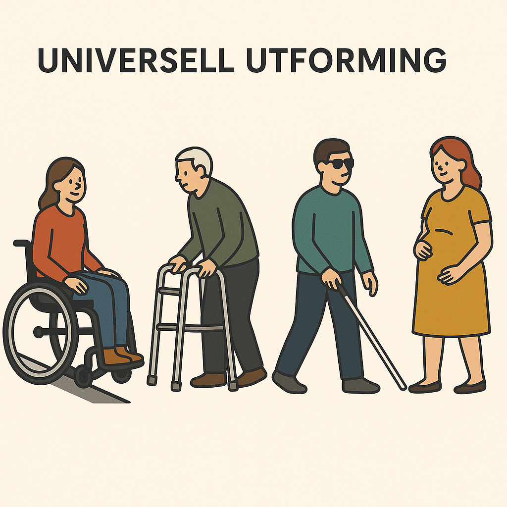
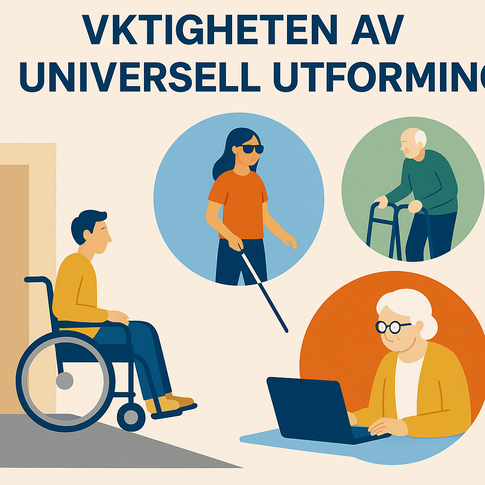
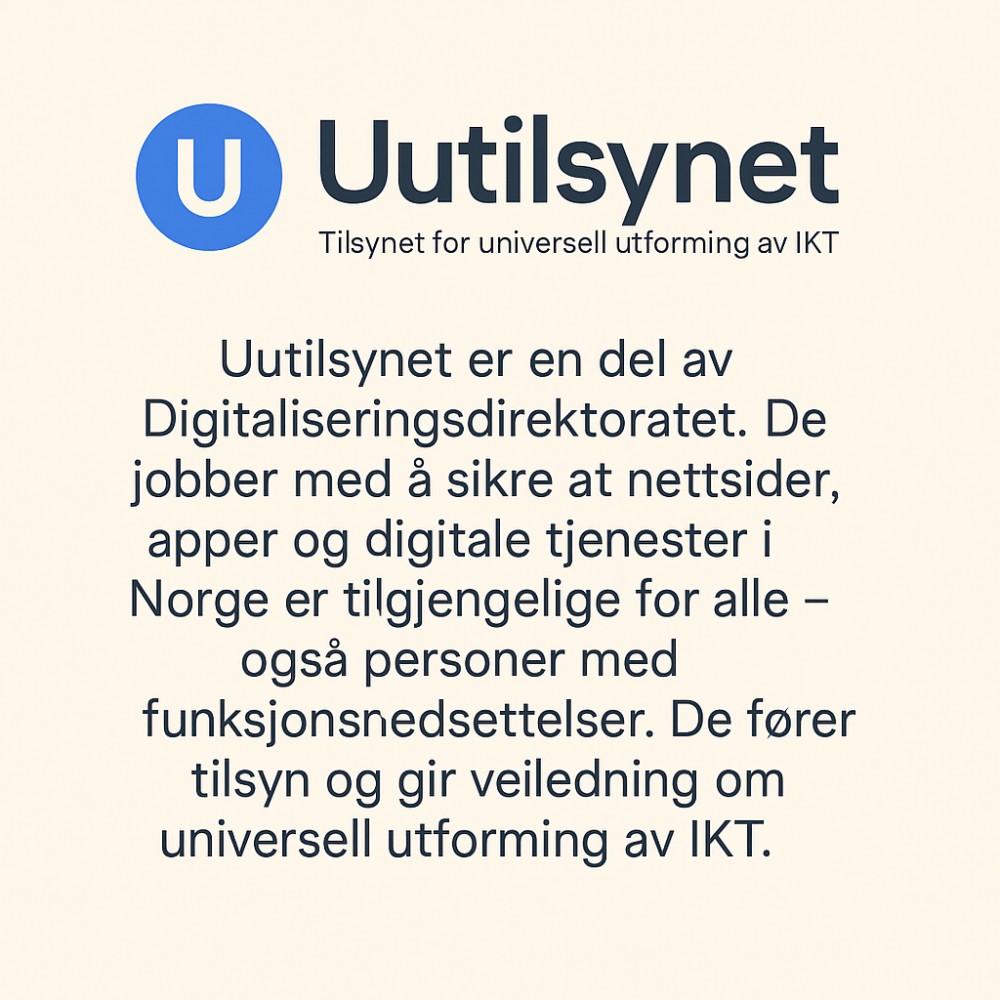

Hva er universell utforming?
Universell utforming betyr å lage løsninger som passer for alle – uansett funksjonsevne, alder eller ferdigheter. Det handler om å fjerne hindringer slik at alle kan delta i samfunnet. Eksempler er ramper for rullestolbrukere, skjermleser-støtte for svaksynte og enkle digitale tjenester for eldre.

Hvorfor er det viktig?
Universell utforming betyr å lage løsninger som alle kan bruke – uansett funksjonsevne, alder eller ferdigheter. Det er viktig fordi det gir lik tilgang til tjenester, informasjon og bygninger, og gjør samfunnet mer inkluderende og rettferdig. For noen gjør det hverdagen enklere – for andre er det helt nødvendig.

Hva er «uutilsynet»?
Uutilsynet er en del av Digitaliseringsdirektoratet. De jobber med å sikre at nettsider, apper og digitale tjenester i Norge er tilgjengelige for alle – også personer med funksjonsnedsettelser. De fører tilsyn og gir veiledning om universell utforming av IKT.
